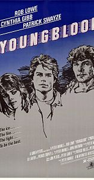
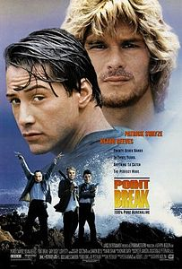
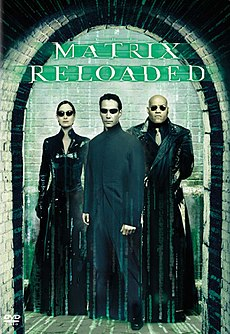
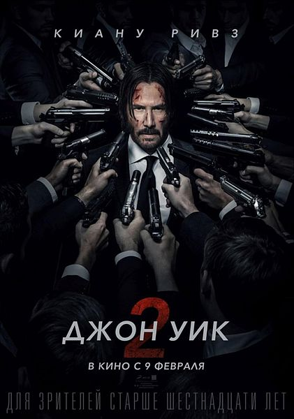

Детство и юность
Ривз родился в столице Ливана, Бейруте, в семье художницы по костюмам Патрисии Бонд (в девичестве — Тейлор) и геолога Сэмюила Ноулина Ривза-младшего[5]. Его мать — англичанка, отец — американец, родился на Гавайях и имеет английские, ирландские, португальские, гавайские и китайские корни. Мать Ривза работала в Бейруте, когда познакомилась с его отцом. Его отец был неквалифицированным рабочим, получил аттестат зрелости во время своего заключения на Гавайях по обвинению в продаже героина в аэропорту. Он бросил свою жену и семью, когда их сыну было три года. В настоящее время Киану не поддерживает отношений со своим отцом.
В детстве Ривз часто менял место жительства[6]. После развода в 1966 году его мать стала художником по костюмам. Сначала они переехали в Австралию, затем — в Нью-Йорк. Там же его мать познакомилась и вышла замуж за Пола Аарона, бродвейского и голливудского режиссёра. Семья переехала в Торонто; пара развелась в 1971 году. В 1976 году Патрисия вышла замуж за Роберта Миллера, рок-промоутера; они развелись в 1980 году. Брак с четвёртым мужем, парикмахером Джеком Бондом, закончился в 1994 году.
Детство и юность Ривза и его сестёр по большей части прошли в Торонто. Его воспитанием в основном занимались родители матери и няньки. В течение пяти лет он сменил четыре школы, включая школу искусств в Торонто, откуда он был позднее исключён «из-за излишней непокорности», как он сам объяснял позднее.
Ривз больше преуспевал в хоккее, нежели в академических дисциплинах, поскольку процесс образования был осложнен для него дислексией. Ривз мечтал стать хоккеистом, выступающим за честь Канады на Олимпиаде, однако травма поставила на его мечтах о хоккее крест. Позднее Киану посещал альтернативную бесплатную школу («Avondale Alternative»), что позволяло ему получать образование и подрабатывать в качестве актёра одновременно. Позже он бросил школу, так и не получив аттестат о среднем образовании.
Карьера
1980-е годы
Ривз начал свою актёрскую карьеру в возрасте девяти лет, появившись в театральной постановке мюзикла «Чёртовы янки». В пятнадцать лет он сыграл роль Меркуцио в театральной постановке «Ромео и Джульетты». Дебют Ривза на экране состоялся на канадском телеканале CBC в одном из комедийных сериалов. В начале 1980-х годов он снимался в рекламных роликах, включая ролик для Кока-Колы, короткометражных фильмах, а также появлялся на театральной сцене в Торонто. В 1984 году он работал корреспондентом в юношеской программе на CBC.
Первым появлением Ривза в полнометражном фильме стала роль хоккейного вратаря в фильме «Молодая кровь» с Робом Лоу в главной роли. Затем Ривз отправился в Лос-Анджелес, после того, как его бывший отчим Пол Аарон, театральный и телевизионный режиссёр, убедил кинопродюсера Эрвина Стоффа стать менеджером и агентом Киану. Стофф является менеджером Ривза по сей день, он принимал участие в продюсировании многих его фильмов.
После нескольких маленьких ролей Ривз получил более заметную роль в драме 1986 года «На берегу реки», основанной на реальных событиях и повествующей о душевных страданиях и муках совести в группе подростков, причиной которых стало убийство их подруги одним из них. После успеха этого фильма среди кинокритиков Ривз провёл конец 1980-х снимаясь в фильмах, ориентированных на подростковую аудиторию. Среди них — драма 1988 года «Вечная песня», научно-фантастический фильм 1989 года «Невероятные приключения Билла и Теда» и его сиквел 1991 года — «Ужасное путешествие Билла и Теда». Представление Ривза в прессе и отклики по поводу его актёрского мастерства в начале 1990-х годов были сильно ассоциированы с образом легкомысленного Теда.
1990-е
В начале 1990-х Ривз начинает отмежёвываться от образа актёра, снимающегося в фильмах для подростков. Он появляется в высокобюджетных фильмах. Так, за роль в боевике «На гребне волны» (1991) он получает награду MTV в номинации «Самый желанный актёр» в 1992 году. Кроме этого, Ривз появляется в различных низкобюджетных, независимых фильмах, включая драму «Мой личный штат Айдахо» (1991), где он снялся вместе со своим близким другом Ривером Фениксом. Также сыграл в фильме Фрэнсиса Форда Копполы «Дракула» (1992).
В 1994 году кинокарьера Киану Ривза достигла новой высоты, благодаря его роли в боевике «Скорость». Участие Ривза в этом фильме вызвало споры среди критиков, поскольку, за исключением фильма «На гребне волны», он был известен преимущественно как актёр комедий и независимых драм. До этого Ривз никогда не был единственным главным персонажем в кинокартине. Летний боевик имел достаточно большой бюджет и был снят перепрофилировавшимся кинооператором, начинающим кинорежиссёром Яном де Бонтом. Неожиданный международный успех фильма сделал Ривза и его партнёршу по фильму Сандру Буллок звёздами первой величины.
Несмотря на свои успехи в блокбастерах, Ривз продолжал принимать предложения о второстепенных ролях и появляться в экспериментальном кино. Его главная роль в романтической драме 1995 года «Прогулка в облаках» стала хитом. Он ошеломил прессу, отказавшись играть в «Скорости 2» и выбрав главную роль в театральной постановке «Гамлета» в Виннипеге. Роджер Льюис, критик «The Sunday Times», писал по поводу его игры: «Он вполне воплотил наивность, великолепную ярость, животное изящество на дрожжах, эмоциональное насилие, эту форму Принца Датского… Он является одним из трёх главных Гамлетов, которых я когда-либо видел, — по одной простой причине: он и есть Гамлет».
Роли Ривза после «Прогулки в облаках» тем не менее оказались провальными и с точки зрения кинокритиков, и с точки зрения популярности. Такие высокобюджетные фильмы, как фантастический фильм 1995 года «Джонни-мнемоник» и триллер 1996 года «Цепная реакция» подверглись резкой критике и провалились в прокате. Независимые фильмы, такие, как «Чувствуя Миннесоту» (1996), также оказались неудачей с точки зрения критиков.
Карьера Ривза стала оправляться от неудач после его участия в мистической драме «Адвокат дьявола» (1997) вместе с Аль Пачино и Шарлиз Терон. Ривз согласился на занижение собственного гонорара за этот фильм ради привлечения к фильму Пачино, то же самое он сделает и в менее успешных «Дублёрах» (2000) ради участия Джина Хэкмана. Несмотря на то, что «Адвокат дьявола» имел кассовый успех, получил хорошие рецензии и доказал, что Ривз может играть взрослого карьериста, многие критики отметили, что его плохая игра умалила приятное впечатление от фильма. Напротив, научно-фантастический боевик 1999 года «Матрица», в котором Ривз сыграл главную роль, принёс кассовый успех и получил положительные рецензии.
Сначала хотел стать хоккеистом. Я был застенчивым ребёнком. Уверенно чувствовал себя лишь на льду. А потом вдруг снялся в нескольких рекламных роликах, только и всего. Хотел заработать лишних деньжат.
2000-е
В промежутках между «Матрицей» и её двумя продолжениями Ривз успел получить положительные отзывы за свою игру мужа-насильника в мистическом триллере «Дар» (2000). Кроме этого, Ривз появился в нескольких фильмах, заслуживших скорее негативные отзывы и небольшие кассовые сборы («Наблюдатель» (2000), «Дублёры» (2000), «Сладкий ноябрь» (2001)). Тем не менее, два сиквела «Матрицы», «Матрица: Перезагрузка» (2003) и «Матрица: Революция» (2003), комедийная мелодрама «Любовь по правилам и без» (2003) и мистический триллер «Константин» (2005) оказались коммерчески успешными и вернули Ривза в центр внимания публики.
Его игра в фильме 2006 года «Помутнение», основанном на мрачном фантастическом романе Филипа Киндреда Дика, получила благосклонные отзывы, а также картина «Дом у озера», его совместная с Сандрой Буллок драма, довольно успешно окупившаяся в прокате.
Он продолжил играть главные роли в двух последующих фильмах 2008 года — «Короли улиц» и «День, когда Земля остановилась». В феврале 2009 года на Берлинале публике был представлен фильм с участием Ривза — «Частная жизнь Пиппы Ли».
2010-e
Ривз начал работать в качестве продюсера и актёра над сюрреалистической романтической комедией «Криминальная фишка от Генри» в декабре 2009 года, закончив её в начале 2010 года. После он начал работу в таком же качестве над научно-фантастической драмой «Пассажиры»
В январе 2009 года было объявлено, что Ривз будет сниматься в адаптации аниме-сериала «Ковбой Бибоп»[8][9]. Киану принял участие в самурайском фильме «47 ронинов».
В 2014 году Киану сыграл главную роль в фильме «Джон Уик»[11], a в 2017 вышла вторая часть — «Джон Уик 2»[12], оба фильма получили хорошие отзывы критиков, готовится третья часть[13]. Киану принял участие в третьем фильме из серии «Приключений Билла и Теда»[14], который ещё не вышел в прокат.